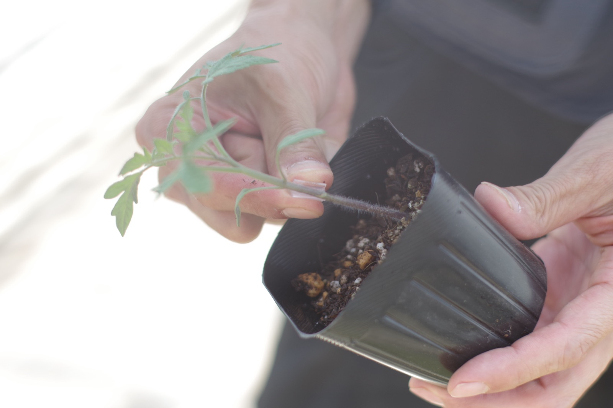
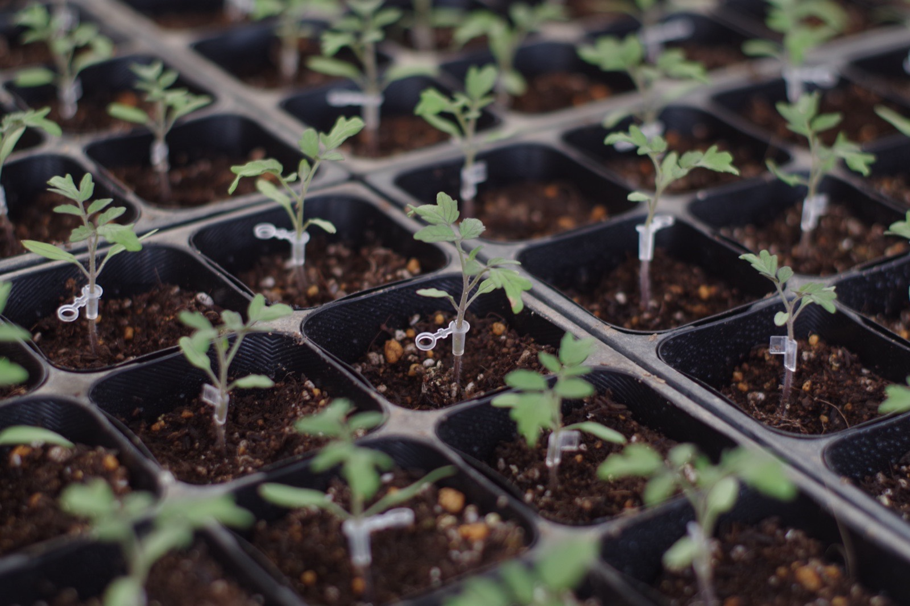
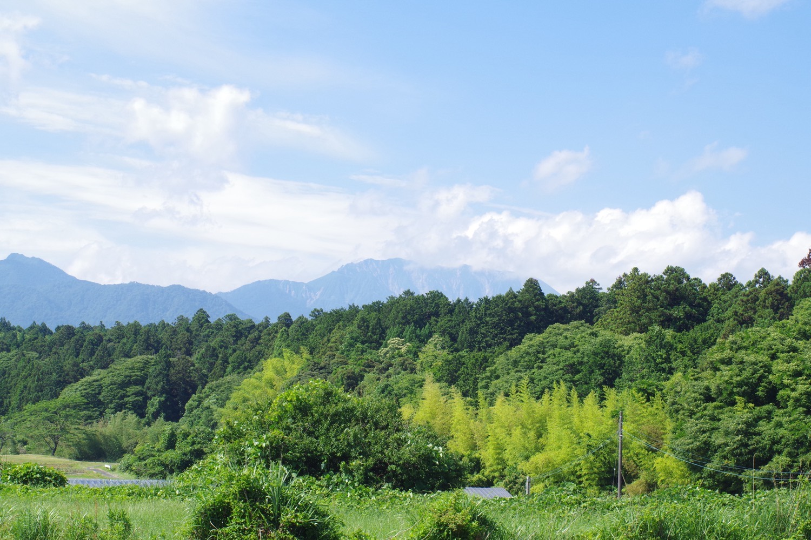
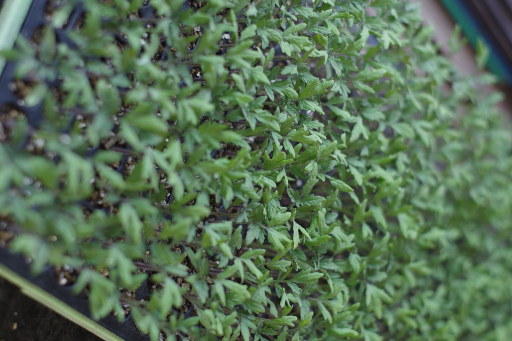

鳥取・大山町の育苗農家
プロ農家に向けて育てている、スイカやトマトの接ぎ木苗。作りすぎて余った分を、オンラインショップで直販しています。

私たちについて
人が土に触れ、作物を育て、命をいただく。この地域で受け継がれてきた「農」の営みを、途切れさせずに次の世代へ手渡す。それが当別当育苗の役割です。先代から受け継いだ育苗の技術を、次の世代へつないでいきます。

作り手が減りゆく時代だからこそ、育苗という土台を支え、先人が積み上げてきた技術を受け継ぎます。
苗づくりを土台に、育苗と農作物の生産販売で、この地域の農業が続いていく力になります。
| 会社名 | 当別当育苗 |
|---|---|
| 所在地 | 〒689-3105 鳥取県西伯郡大山町束積253-2 |
| 代表者 | 当別当 弘貴 |
| 設立 | 2001年（平成13年） |
| 電話 | 0858-58-5005 |
| 事業内容 | 育苗事業（接ぎ木苗ほか）／農作物の生産・販売 |
オンラインショップ
当別当育苗の苗は、プロの農家に向けて育てているものです。作りすぎて余った分を、捨てずにオンラインショップで直販しています。余剰分の販売のため、並ぶ品目や数量はその時々で変わります。


スイカ・キュウリ・メロン・ナスなど、多品目の野菜苗を育てています。パンジー・ビオラなどの花苗は、秋から冬にお届けします。
価格・在庫はオンラインショップでご確認ください
オンラインショップで見る →実際の販売はオンラインショップ（BASE）で行います。クレジットカード等の決済情報は、当サイトでは一切扱いません。